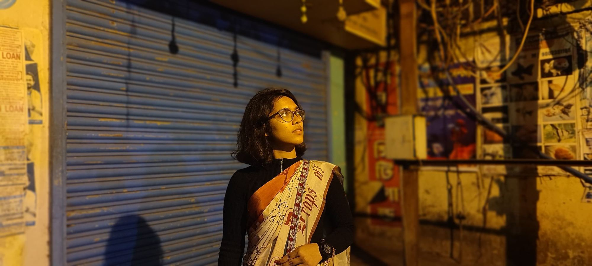
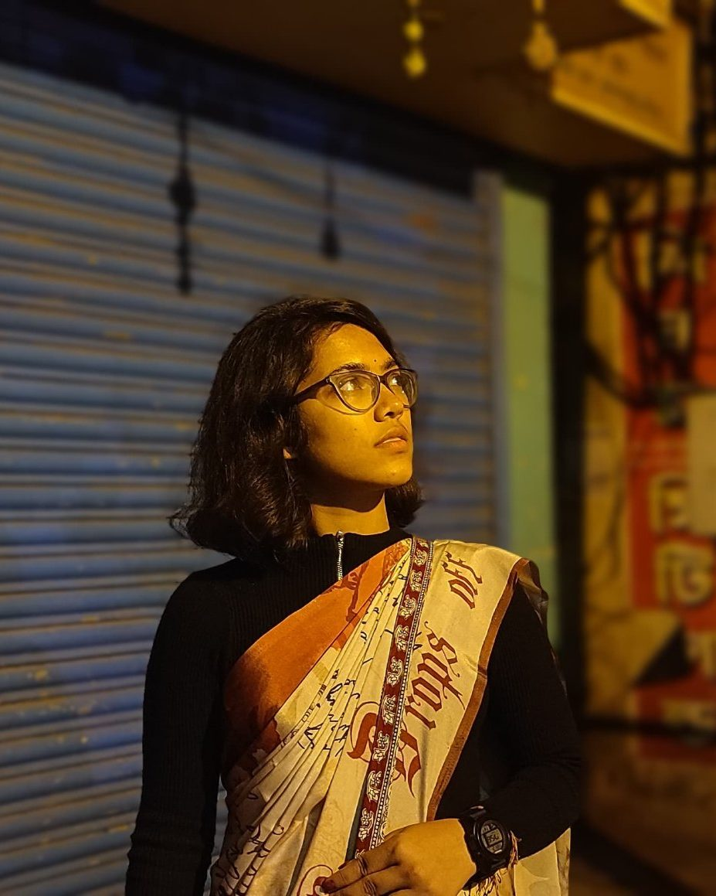

Payradanga, Nadia, West Bengal · Open to opportunities
DebanjaliBhattacharjee
Curious by nature. Building one skill at a time.
Computer Applications graduate and computer educator, learning to build websites and programs.
About
I like explaining computers to people who think they're hard.

I studied Computer Applications at Rishi Bankim Chandra College, Naihati, and now teach computer fundamentals, MS Office and basic AI concepts to students and adults. Teaching has taught me more patience than any exam did, and it makes me better at the subjects I'm still learning myself.
Outside the classroom I'm picking up web development: HTML, CSS and a bit of JavaScript, alongside basic Python, Java and PHP. I'm looking for roles in data entry, MIS, back office or computer operations where I can contribute, learn from people ahead of me, and grow.
- Based in
- Payradanga, Nadia, West Bengal
- Studied
- B.Sc. Computer Applications, WBSU (2025)
- Working as
- Computer & AI Instructor
Skills
Grouped by how I use them. Where my knowledge is still basic, I say so.
Computer & Office daily, practical use
MS Word, MS Excel, MS PowerPoint, Data entry, Documentation, Computer operations
Web & Database hands-on, still growing
HTML, CSS, JavaScript (beginner), MySQL
Programming foundations
C (coursework), Java (basic), Python (basic), PHP (basic)
Tools comfortable with
VS Code, Canva
Strengths how I work
Communication, Problem solving, Time management, Attention to detail, Quick learning
Work
Hands-on projects and websites. More will be added as I build them.
Experience
Feb 2025 to present
Computer & AI Instructor
All India Board of Computer Education (AIBCE) · Part-time
- Teaching computer fundamentals and MS Office, including Excel.
- Introducing basic AI concepts to students and adults.
- Building practical computer skills for their courses and workplace requirements.
Ongoing
Private Tutor
Independent · Part-time
- Regular academic guidance and support for students.
Education
2022 to 2025
B.Sc. in Computer Applications
Rishi Bankim Chandra College, Naihati · West Bengal State University (WBSU)
2022
Higher Secondary
WBBSE · 74.40%
2020
Secondary
WBBSE · 75.28%
Languages
- BengaliNative
- EnglishProficient
- HindiConversational
Teaching. Web building. Cricket. Exploring. Away from the screen, that's the list.
Have an opportunity, an idea, or something interesting to build? Let's connect.